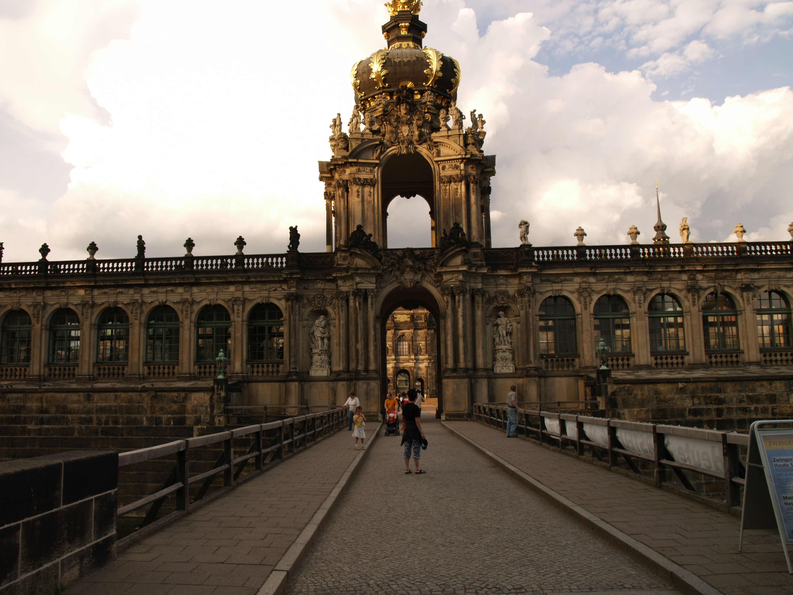

Visit the old town of Dresden
On the left bank of the Elbe is Dresden's historical centre with buildings from the Renaissance, the Baroque and the 19th century. Despite being devastated in the Second World War, the Altstadt (Old Town) has kept or regained its attractive buildings. The most well-known symbol of the rebuilding of the city centre is Dresden Frauenkirche (Church of Our Lady), the magnificent domed Baroque church which again dominates the Dresden skyline. After the Second World War, Neumarkt square and the symbolic ruins of the Frauenkirche remained almost untouched for half a century before also coming up for construction.
